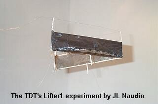

created on October
10th, 2001 - JLN Labs - Last
update February 21th, 2003
Toutes les informations et schémas sont publiés
gratuitement ( freeware ) et sont destinés à un usage personnel
et non commercial
All informations and
diagrams are published freely (freeware) and are intended for a private use and a non commercial
use.
Return to the Lifter
project home page